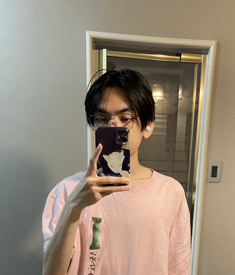

Welcome to Juan's Website
I am an international student from Indonesia, ever since I was a kid I always have a fascination in
computing especially
in the technical side of things, I've always wanted to attend programming course after graduation but
instead I went for
Accounting major just because. So, I want to use this chance to learn programming in depth in this
course and land a career
in computing.
Aside from that, at my free time I usually play video games or read books. My all-time favorite game
would be Dota 2 since I
have played that game since I was a kid and it kept me engrossed even after 10 years. For singleplayer
game, my favorite is
Elden Ring, I have always been a big fan of Souls series and Elden Ring is the perfect form of all souls
game combined.
The world is vast, beautiful and packed with contents, not to mention the strongest point of souls
series, the combat.
The combat feels fluid, fast paced and challenging.
| Term | Course | ||
|---|---|---|---|
| Code | Name | Hrs/Week | |
| Fall | CSD105 | Python | 3 |
| CMM115 | Communications I | 3 | |
| CSD120 | Introduction to Web Development | 4 | |
| CSO104 | Introduction to Operating Systems and LAN | 4 | |
| MTH122 | Computer Mathemtics | 3 | |
| TNY130 | Technology in Society | 2 | |
| Winter | CSA103 | Business Applications I | 4 |
| CSD102 | Programming Using C++ | 5 | |
| CSD212 | Web Scripting Languages | 4 | |
| CSO102 | Introduction to Linux | 4 | |
| CST104 | PC Hardware and Networking | 5 | |
| Total | 41 | ||
My Favourite Things
Games

Haiku
I want to sleep
Swat the flies
Softly, please.
by